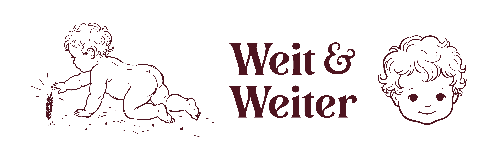
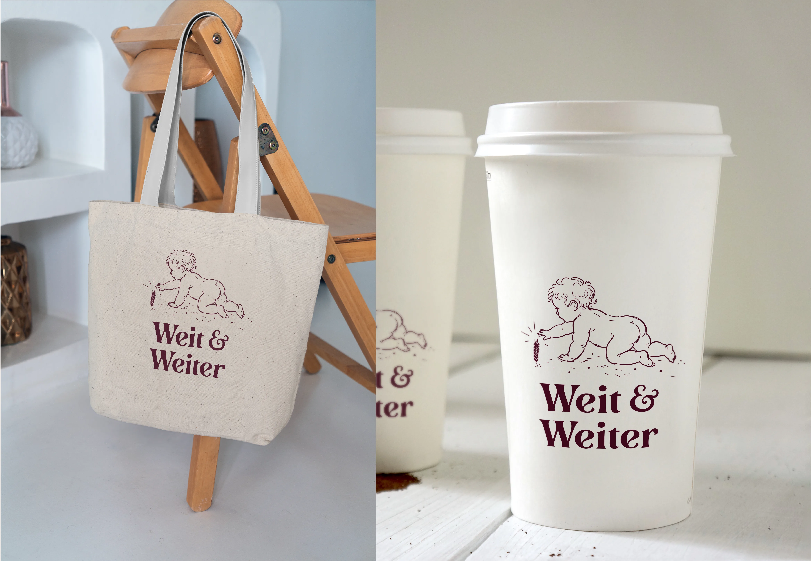
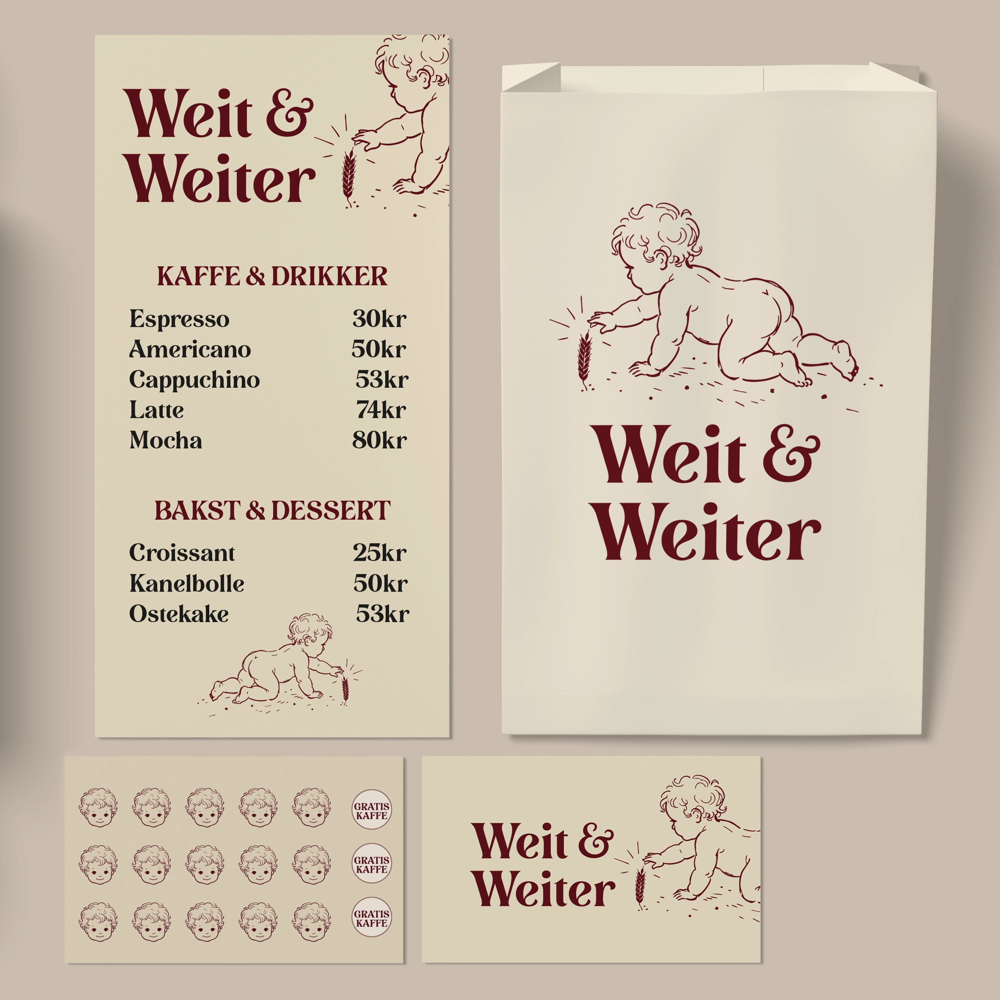
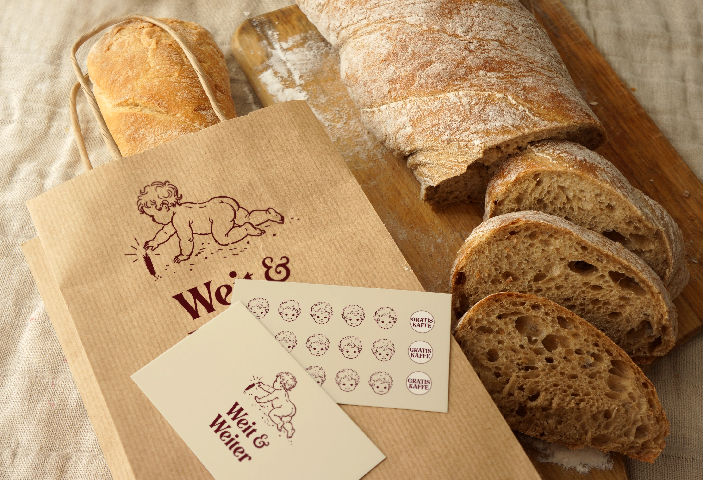
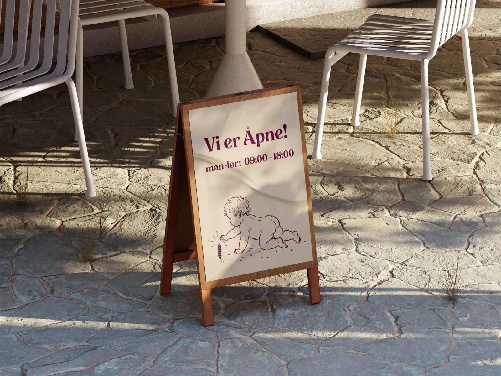
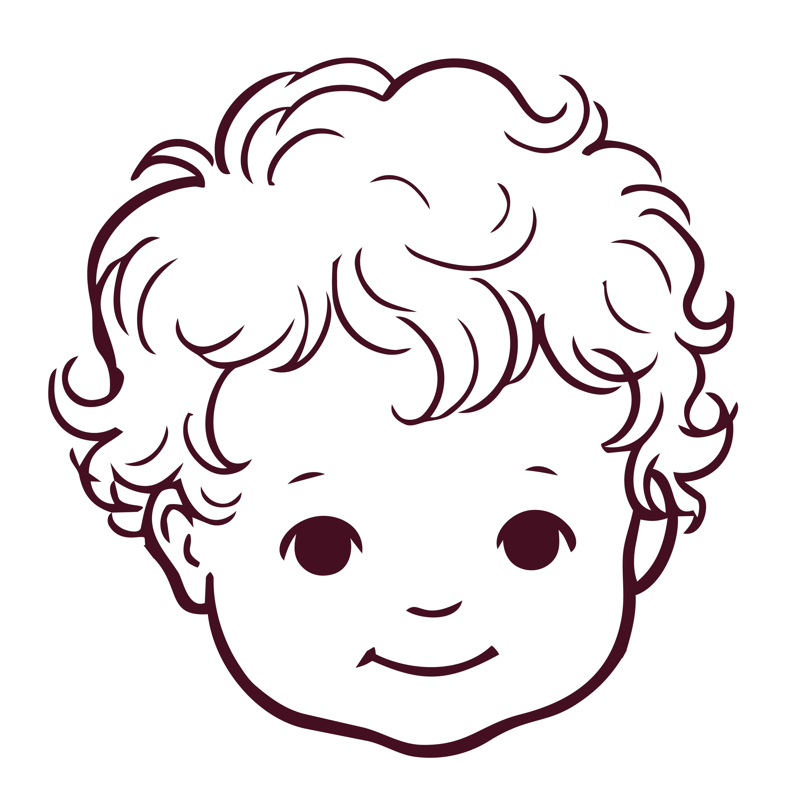
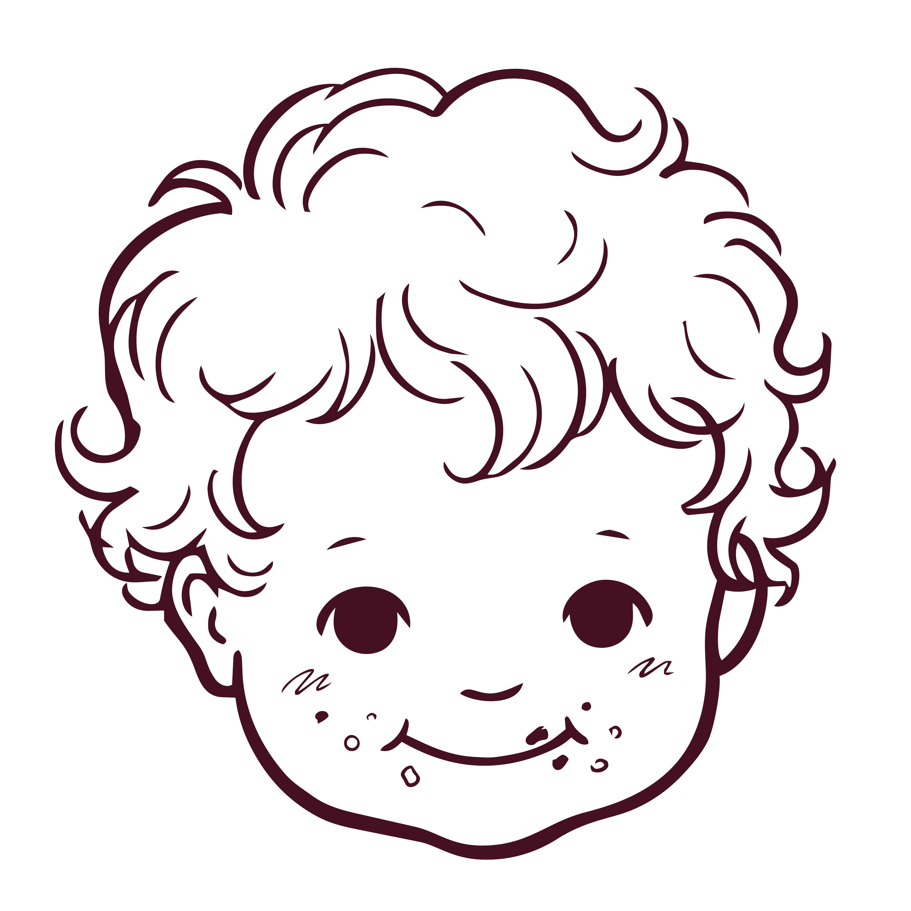
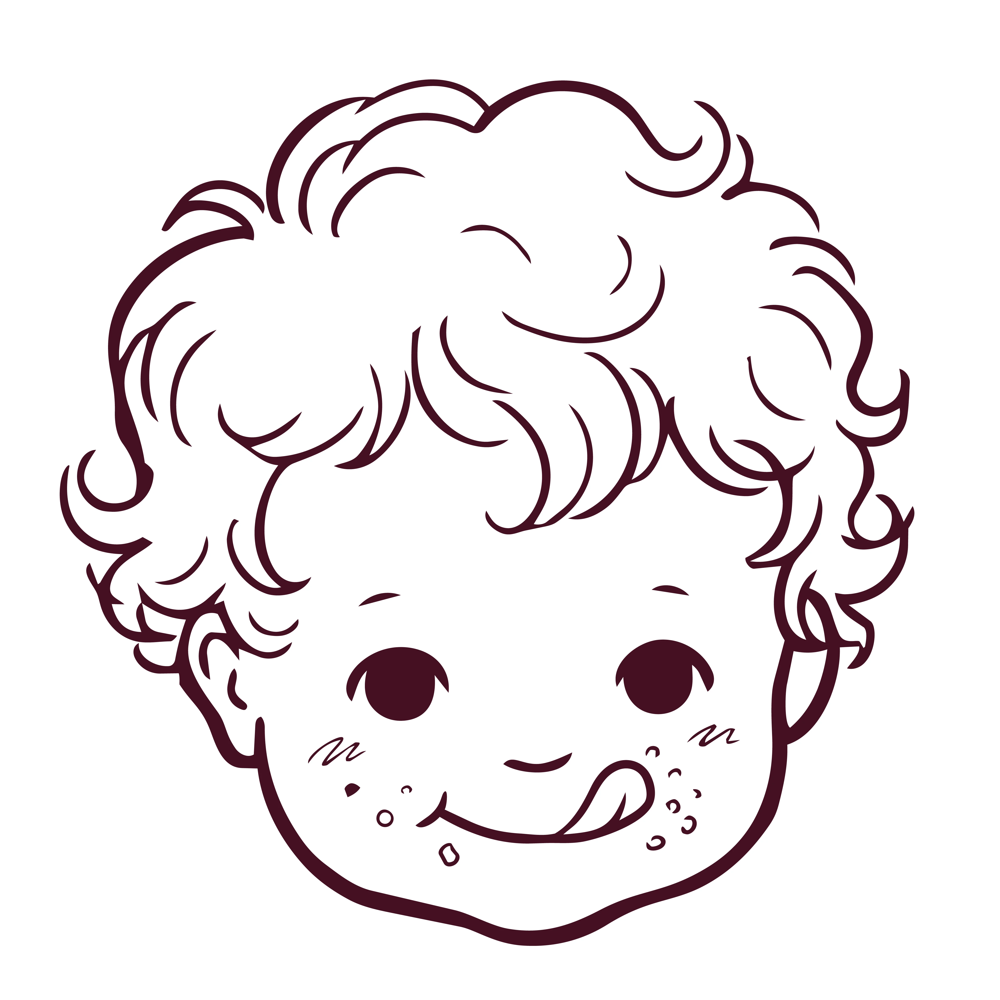
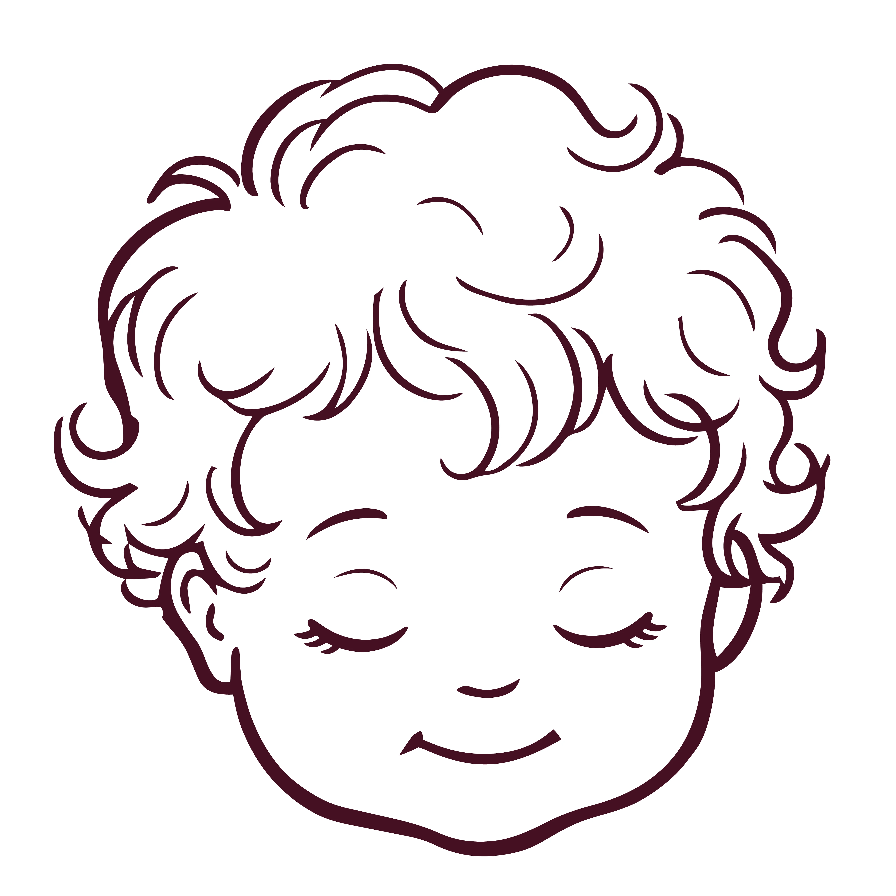

Inspirasjonen og historien bak
Hele prosjektet startet egentlig med at jeg forelsket meg pladask i fonten Lovechild da jeg først la merke til den på emballasjen til det svenske bakeriet Fria. Jeg tilbrakte mange av mine barndomssommere på familiens hytte i Sverige, og dette utløste en sterk nostalgi. Det var også på disse turene jeg først ble betatt av SIA Glass og deres ikoniske figur, "Den svenska gräddglassens skyddsängel". Jeg ønsket å fange akkurat den nostalgien – den varmen, omsorgen og den trygge følelsen fra barndommens somre – og oversette det til et moderne kafékonsept.





Ekstra illustrasjoner
Hovedillustrasjonen med hveten bærer selve historien til merkevaren. At jeg i tillegg har valgt å bruke babyhodet som et eget, frittstående ikon, gir den visuelle profilen større fleksibilitet. Det fungerer som en forenklet signatur for merkevaren der hele illustrasjonen ville tatt for mye plass eller mistet lesbarhet, for eksempel som et stempel eller et klistremerke.




Lovechild Regular
OPQRSTUVWXYZÆØÅ
qrstuvwxyzæøå
Primær farger
Sekundær farger